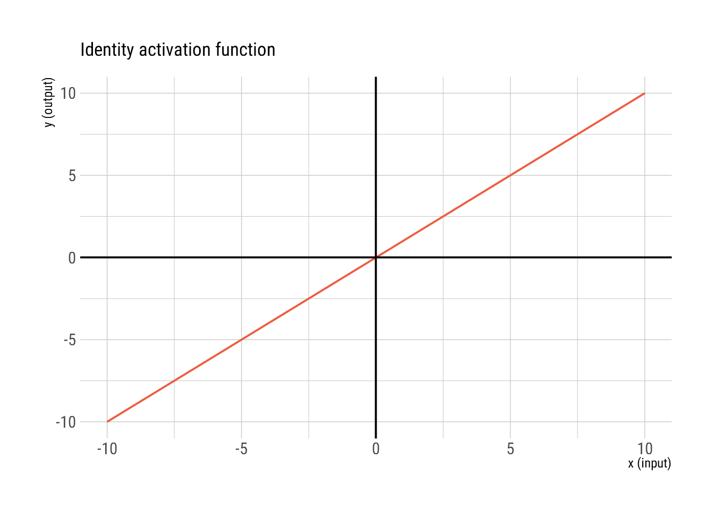
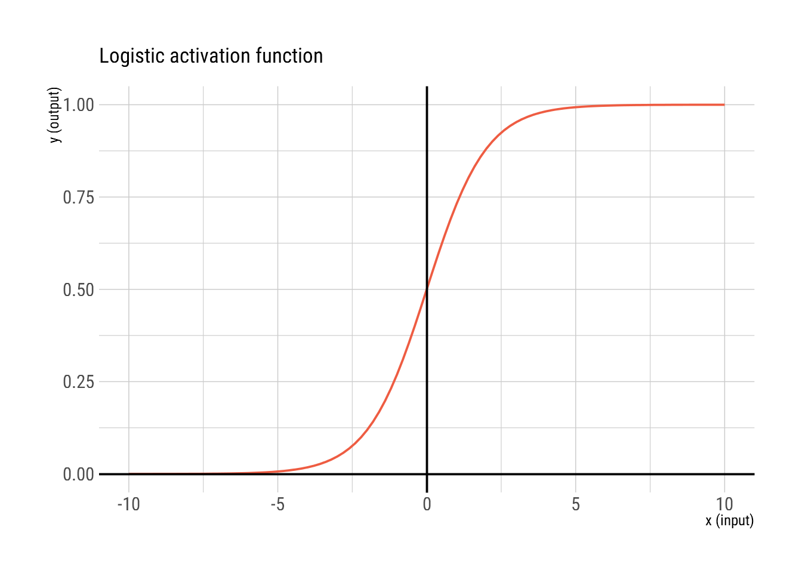
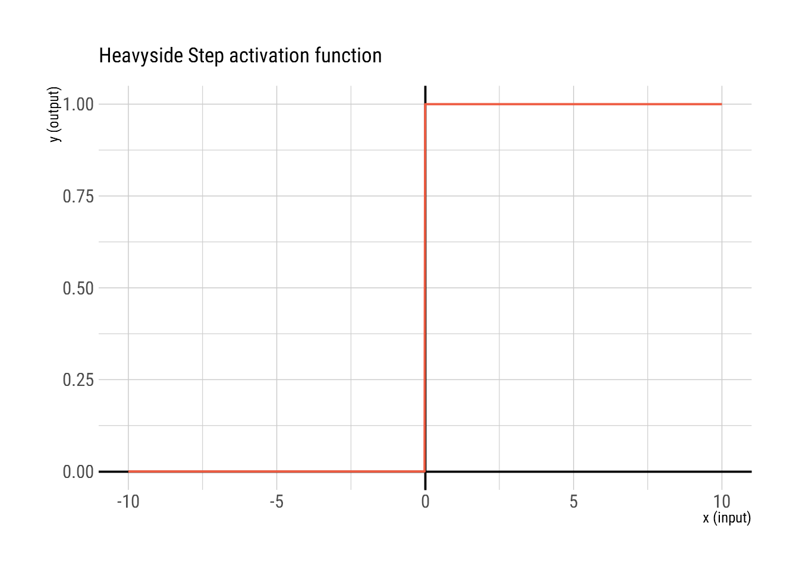
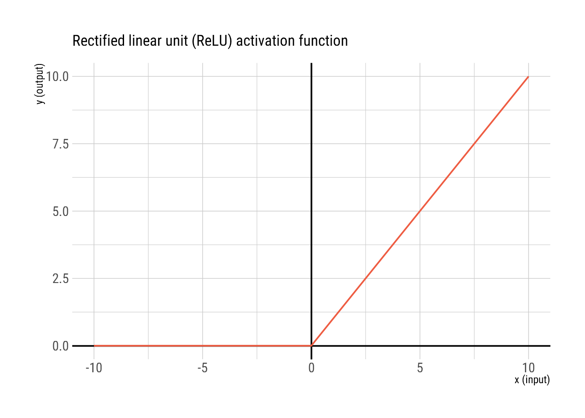
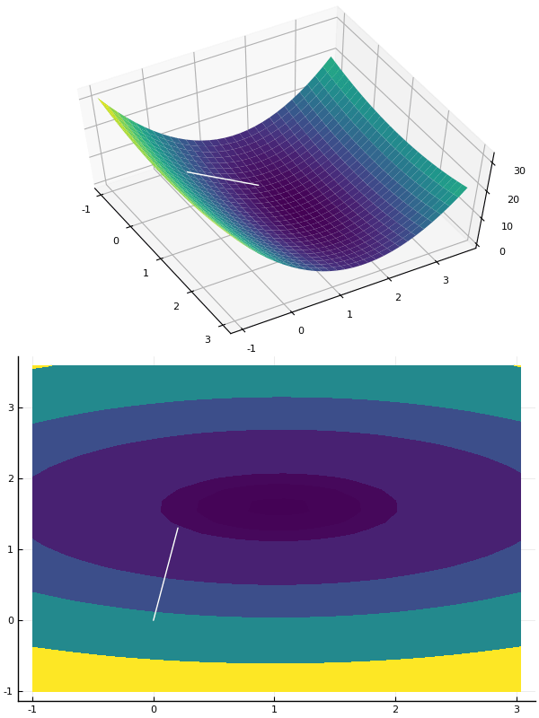

Chapter 2 The artificial neuron
We will make one small change to the artificial neuron we discussed previously by adding a bias \(w_0\) to mixture of the inputs. This is analogous to assuming that, when all the inputs are added to the neuron, there may already be a neuron specific base line signal for each neuron.

2.1 What can a single neuron accomplish?
Based on the structure of the artificial neuron, the generalized format of y can be written as:
\[ y = \phi(w_0+w_1x_1+w_2x_2+\ldots+w_kx_k) \]
Depending on function \(\phi\) a single neuron can be used to model a variety of tasks. We will provide some common models below.
2.1.1 Linear Regression
When \(\phi(x) = x\) which transforms the above equation to \[ y = w_0+w_1x_1+w_2x_2+\ldots+w_kx_k\] 
2.1.2 Logistic regression
When \(\phi(x) = logit^{-1}(x) = \frac{e^x}{1+e^x}\) which transforms the above equation to \[ log\frac{y}{1-y} = w_0+w_1x_1+w_2x_2+\ldots+w_kx_k \]
This is equivalent to binary logistic regression where the neuron outputs y (The probability of the input belonging to one class)

2.1.3 Linear Classification
When \(\phi(x) = \Bigg\{ \begin{aligned} &0& \text{ if }x < 0\\&1& \text{ if }x \geq 0\\ \end{aligned}\)
The above equation transforms to \[ y = \Bigg\{ \begin{aligned} &0& \text{ if }w_0+w_1x_1+w_2x_2+\ldots+w_kx_k < 0\\ &1& \text{ if }w_0+w_1x_1+w_2x_2+\ldots+w_kx_k \geq 0 \end{aligned} \]

2.1.4 Other activation functions
There are infinitely many activation functions that can be used to perform a variety of tasks. You can check out a non comprehensive list of activation functions that have been used for neural networks in Wikipedia. There is no consensus on how to pick an activation function (still an active area of research). Some activation functions work better for some tasks.
All generalized linear models (lognormal, gamma, probit, poisson etc.) can be modeled using a single neuron by changing the activation functions accordingly.
2.1.5 Biological Activation functions
Before we move on we will touch upon one activation function inspired by biology, the rectified linear unit (ReLU) activation function.

In the human brain the neurons do not fire for every input, but when they fire the firing signal strength is proportional to the input. This is probably to be energy efficient. The ReLU function mimics this strategy by outputting zero below a threshold and something proportional to the input above a certain threshold.
Now that we have seen the range of things that a single neuron can accomplish, the next question is how does the neuron learn from the data…
2.2 How does a neuron learn?
To understand how a neuron learns, let us take the example of a neuron with an identity activation function \(\phi(x) = x\) which has the model \[ y = w_0+w_1x_1+w_2x_2+\ldots+w_kx_k\].
How do humans learn?
- By making mistakes and correcting them
- someone teaches them
- By reasoning based on previous experience and understanding
The neuron does not have the opportunity to do 2 and 3 yet, so the only option left for it is the first approach by making mistakes and correcting itself.
Obviously it needs data, as it is going to learn from data. The data consists of output \(y\) for a variety of inputs \(X = x_1,x_2,\ldots,x_k\).
The job of the neuron is to learn the values of \(W =w_0,w_1,\ldots,w_k\), so that, it can output the same \(y\) as the data, for a given \(X\). Let us assume that the neuron started with random values of \(W\). Now it can calculate the output for any input \(X\) using the equation
\[ y = w_0+w_1x_1+w_2x_2+\ldots+w_kx_k\].
So, how would the neuron know it made a mistake?
Obviously if the \(y_{predicted}\) the neuron outputs for a given \(X\) is not equal to the \(y_{data}\) in the dataset, it knows it made a mistake.
How would it correct itself?
If all the neuron knows is if it made a mistake \(y_{predicted} \neq y_{data}\) what are its next options?
- Pick another random set of values for \(W\).
- …
Let us do an experiment by thinking from the perspective of the neuron:🤠
- Yay!😃 I have data\([X,y]\). I will pick values for \(W\) and output \(y_{predicted}\). I hope this goes well!😇
- Damn!😒 my output does not match with the data \(y_{predicted} \neq y_{data}\). I do not have correct values of \(W\), so I need to get new values for \(W\). (Randomly generates new values for \(W\)) Yess! this should work.😎
- Whattt?🤬 my output does not match with the data again… \(y_{predicted} \neq y_{data}\). Let me try another \(W\).🙄
… This goes on for some time
- Oh my God….😖 This is boooriinggg!!!😴 I need to be smart…🤔 Let me look at what I did and if I gained anything from what I did till now
- Looking back at my results I see that some combinations of the weights make my output go above the expected data output and some make it go below. I should pick weigths in between those weigths so my output does not go above or below. Aha! 😈
… Some time later.
🤨I think I got close enough, and I know, I would never get zero error so these values of \(W\) are good enough. I think I have successfully done my job!😅
What we learned from this experiment is that:
\((y_{predicted} - y_{data})\)(also called error) is a function of the parameters \(W\) that the neuron wants to learn.
The neuron wants to minimize this error … does it?
Actually , it wants to minimize the absolute error for obvious reasons. So our next question is:
Given a function \(J(W)\) find the value of \(W\) that minimizes it.
This is where we need some math . Take a detour to understand Gradient Descent Algorithms and come back here after understanding them.
We can use gradient descent algorithms to come up with the best values for \(W\), given the data.
2.2.1 Estimation of weights for a single neuron with identity activation
\[ \begin{align} J(W) &= |y - \hat{y}|\\ &= |y - w_0+w_1x_1+\ldots+w_kx_k| \end{align} \] However, as the absolute value(\(||\)) function is not differentiable at zero, differentiable functions such as the squared error function, make computations easy using the gradient descent methods compared to non-differentiable error functions. Although, in some instances, they may make training the neuron harder.
\[ \begin{align} J(W) &= (y - \hat{y})^2\\ &= (y - w_0-w_1x_1-\ldots-w_kx_k)^2 \end{align} \]
To use gradient descent we need to compute the derivatives of \(J\) with respect to \(W = w_0,w_1,\ldots,w_k\).
\[ \frac{dJ}{dW} = \begin{bmatrix} \frac{\partial J}{\partial w_0}\\ \frac{\partial J}{\partial w_1}\\ \vdots\\ \frac{\partial J}{\partial w_k} \end{bmatrix} = \begin{bmatrix} -2(y - w_0-w_1x_1-\ldots-w_kx_k)\\ -2x_1(y - w_0-w_1x_1-\ldots-w_kx_k)\\ \vdots\\ -2x_k(y - w_0-w_1x_1-\ldots-w_kx_k) \end{bmatrix}\]
The update equation for \(W\) using the gradient descent algorithm is then-
\[ W:= W-\alpha\frac{dJ}{dW} \]
\[ \begin{bmatrix} w_0\\ w_1\\ \vdots\\ w_k \end{bmatrix}:= \begin{bmatrix} w_0\\ w_1\\ \vdots\\ w_k \end{bmatrix}-\alpha\begin{bmatrix} -2(y - w_0-w_1x_1-\ldots-w_kx_k)\\ -2x_1(y - w_0-w_1x_1-\ldots-w_kx_k)\\ \vdots\\ -2x_k(y - w_0-w_1x_1-\ldots-w_kx_k) \end{bmatrix}\]
The above equations are correct when we have one data point \([y,X]\). However we have \(n\) data points \([y_i,X_i]_{i=1}^n\).
\[ J(W) = \sum_{i=1}^n (y_i - \hat{y}_i)^2 \]
\[ W:= W-\alpha \sum_{i=1}^n -2[y_i - X_iW].* X_i^T\]
.* is element wise multiplication
(redefining \(X_i\) for mathematical simplicity) with \(X_i = [1, x_1^{(i)}, x_2^{(i)}, x_3^{(i)}, \ldots, x_k^{(i)}]\)
2.2.2 Implement gradient descent for this linear neuron example
using Random, Distributions;
function simulate_data(;n::Int64 = 100, p::Int64 = 4)
β = rand(Normal(1, 2), p+1 ); # generate β coefficients
X = [ones(n,1) rand(MvNormal(p, 2),n) |> transpose]; # generate the covariates/predictors X
Y = X*β + rand(Normal(0,0.1), n); # generate output Y = Xβ+ϵ
return (Y,X,β);
end;
Y,X,β = simulate_data(n = 1000, p = 10);
function gradient_descent(;Y::Array{Float64,1},X::Array{Float64,2}, α::Float64 = 0.01, epochs::Int64 = 100)
n,p = (size(X,1), size(X,2)-1); # get n and p from X
W = Array{Float64}(undef, p+1); # initialize W: the weights vector
for i in 1:epochs # iterate set number of epochs for the weights to converge
dW = -2*transpose(X)*(Y-X*W); # calculate gradient
W = W -α*dW; # update weigths
end
return W;
end;
W = gradient_descent(Y = Y, X = X, α = .0001, epochs = 100);
using PrettyTables
pretty_table(hcat("w".*string.(0:10), W, β), ["name", "β", "wᵢ"])## ┌──────┬───────────────────────┬───────────────────────┐
## │ name │ β │ wᵢ │
## ├──────┼───────────────────────┼───────────────────────┤
## │ w0 │ -1.2018248784854897 │ -1.2009784222530304 │
## │ w1 │ 1.0893968528558549 │ 1.0883896379664721 │
## │ w2 │ 6.254195223654139 │ 6.253891228322042 │
## │ w3 │ 3.56663547532782 │ 3.5674692383667446 │
## │ w4 │ 1.002389840731874 │ 1.0027461184453705 │
## │ w5 │ 0.9668088646353741 │ 0.9671774035656489 │
## │ w6 │ -2.6723370496389043 │ -2.6717159534926873 │
## │ w7 │ 2.0048167191530433 │ 2.0065704597536773 │
## │ w8 │ 1.9045818648761308 │ 1.90293706640294 │
## │ w9 │ -0.035554484869647004 │ -0.038067374181011804 │
## │ w10 │ 2.584741324118255 │ 2.5844571409736368 │
## └──────┴───────────────────────┴───────────────────────┘From the above result we can see that we have recovered estimates closer to the true model that was simulated.
The gradient descent algorithm works as shown in the figure below. 
2.2.3 Next Exercises, Implement classification and logistic regression when time permits
So we have understood how a neuron learns the model parameters and can predict when a new observation comes.
Ok then what is my next question…. I know what a single neuron can do, It would be good to know what a single neuron cannot do.